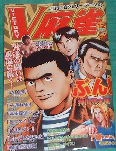

麻雀コミック誌といえば、近代麻雀３誌。昔はこのほかに、麻雀ゴラクとかNEW麻雀など何誌かあった。しかしいずれも数年で廃刊となり、近代麻雀３誌以外で残っているのはヴィクトリー麻雀だけ。近代麻雀とは執筆陣もちと異なり、σ(-_-)も毎号、楽しみにしていた。
特にお気に入りは山松ゆうきちの「牌毒」。作風自体が好きなのだが、「牌毒」はハチャメチャ親父が主人公で、いちだんと面白い。またKO-TAの「麻雀荘奇談」も一風変わっていて面白かった。

ところがこのヴィクトリー麻雀、上掲の今月号で廃刊になるという。あぁ！、とっても残念だ。廃刊の理由は、単純に言って「ペイしない」ということらしいが、真相はよく分からない。
いずれにしても突然の廃刊決定のようで、連載モノは今月号で強引に結末を迎えている。１話完結タイプの連載モノはなんとかなるが、長期連載タイプの話を突然終了させるには、さぞかし作者も困っただろうな。。。
それでもなんとか終了させることができた話はいい。「牌毒」など、話の流れからいって結末つけようもなかったのか、今回は掲載もされていない。。。
その代わりかどうか分からないが、今月号にはＨカップの巨乳美女のグラビアが掲載されている。ひょっとして、突然の廃刊に対するお読者サービスなのかいな？。ガバッーと紹介したいのは山々であるが、著作権で問題になるといけない。この程度で我慢してくれ。（^-^；
それにしても、これだけコミック雑誌がブームなのに、麻雀専門誌を取り巻く状況はかなり厳しそうだ。麻雀コミックはこんにちの麻雀文化の一翼をになっているし、名作だって多く生まれている。麻雀コミック出版社には、大いに頑張ってもらいたい。
|